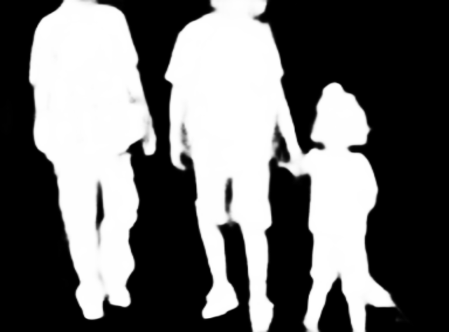
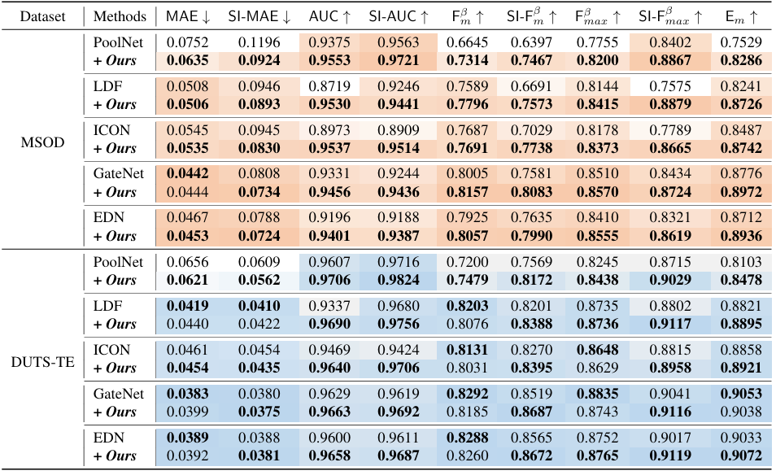

We observe that current metrics are size-sensitive, where larger objects are focused, and smaller ones tend to be ignored. The evaluation should be size-invariant because bias based on size is unjustified without additional semantic information. We therefore introduce SI-SOD, namely size-invariant salient object detection. It evaluates each salient object separately and then combines the results, effectively alleviating the imbalance. We further develop an optimization framework tailored to this goal, achieving considerable improvements in detecting objects of different sizes.
The gallery below presents several images from the datasets and a comparison of SI-SOD with the previous state-of-the-art methods. Use the slider and gestures to reveal details on both sides.
Current metrics can be size-sensitive, as shown in the images above. The left-top and right-top are the original image and the corresponding label mask, respectively. The left-bottom and right-bottom are the results predicted by previous methods and ours. It is obvious that previous methods could merely detect the larger object on the right. In comparison, ours successfully capture all salient objects. However, ours induces a worse MAE than the prediction generated by previous methods. Large objects dominate size-sensitive metrics, consequently leading to practical performance degradation because there are many cases where small objects are critical for downstream tasks. Our proposed size-invariance metric, however, equally consider each object, and are therefore more consistent with usual visual perceptions.
Images below illustarte how we consider each object. For the left image, there is a foreground frame ① and a background frame ②. For the right image, there are five foreground frames, namely ① to ⑤, and a background frame ⑥.
Motivated by the principles of the size-invariant evaluation, our optimization goal is expressed as follows: $$ \mathcal{L}_{\mathsf{SI}}(f)=\sum_{k=1}^{K} \ell(f_k^{fore}) + \alpha \ell(f_{K+1}^{back}), $$ where $\ell(\cdot)$ could be any popular loss in the SOD community (such as $\mathsf{BCE}$ or $\mathsf{IOU}$). If $\ell(\cdot)$ is separable, we set $\alpha=\frac{S^{back}_{K+1}}{\sum_{k=1}^{K}S_k^{fore}}$; for composite losses like DiceLoss and IOU Loss, we set $\alpha=0$ because the $\mathsf{TPR}$ is always 0 in the background.
The proposed loss enjoys a well-gaurateed generalization bound. Specifically, for risk $g(\cdot)$ with $L$-Lipschitz, predictor $f(\cdot)$, then with probability at least $1-\delta$, we have: $$ \sup_{f \in \mathcal{F}}(\mathbb{E}[g(f)]-\hat{\mathbb{E}}[g(f)]) \\ \le C\cdot \frac{L\sqrt{K}}{N} \cdot \max_i \mathfrak{R}_N(\mathcal{F}|_i)\cdot\log^{\frac{3}{2}+\epsilon}\left(\frac{N}{\max_i \mathfrak{R}_N(\mathcal{F}|_i)}\right) \\ +3\sqrt{\frac{\log \frac{2}{\delta}}{2N}}, $$ where $C>0$ and $\mathfrak{R}(\mathcal{F};x_{1:N})$ denotes the worst-case Rademacher complexity.
Quantitative comparison of SI-SOD with SOTA SOD methods on typical datasets. Bold numbers and darker units are better. With our loss function, previous methods gain considerable improvements, especially in multi-object scenarios.
Refer to the pdf paper linked above for more details on qualitative, quantitative, and ablation studies.
@inproceedings{li2024sizeinvariance,
title={Size-invariance Matters: Rethinking Metrics and Losses for Imbalanced Multi-object Salient Object Detection},
author={Feiran Li and Qianqian Xu and Shilong Bao and Zhiyong Yang and Runmin Cong and Xiaochun Cao and Qingming Huang},
booktitle={The Forty-first International Conference on Machine Learning},
year={2024}
}
}